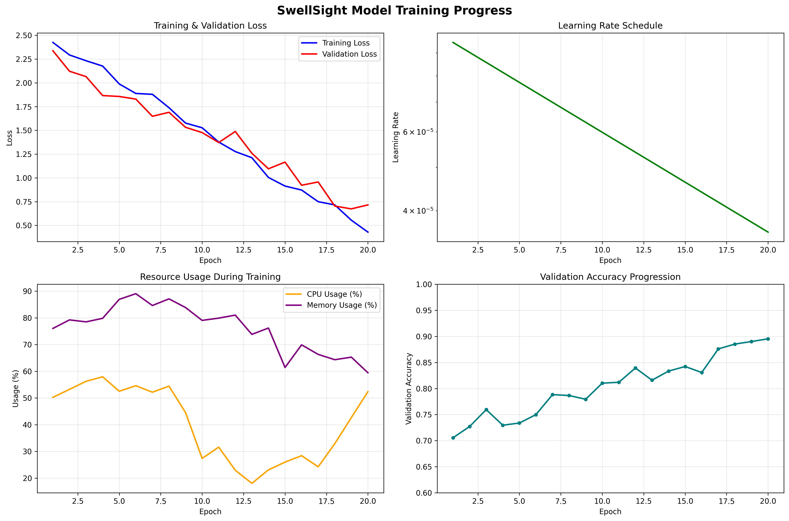
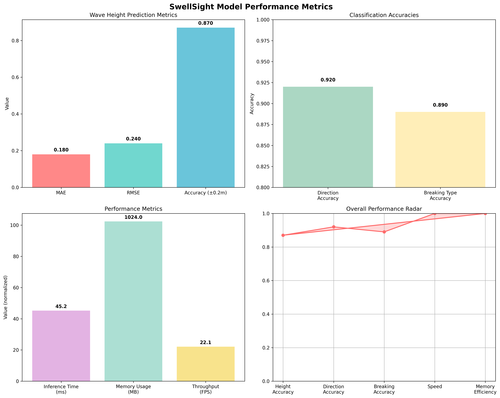
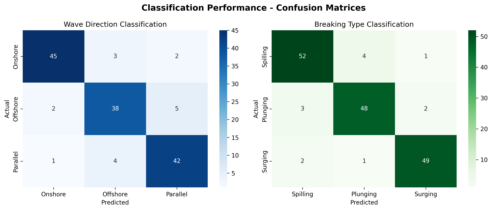
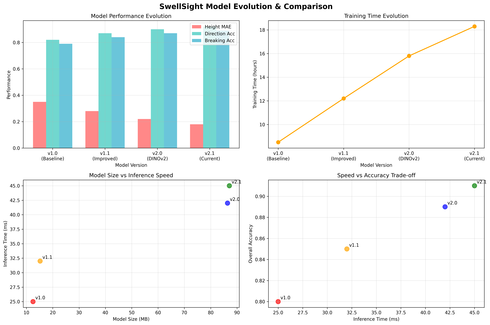
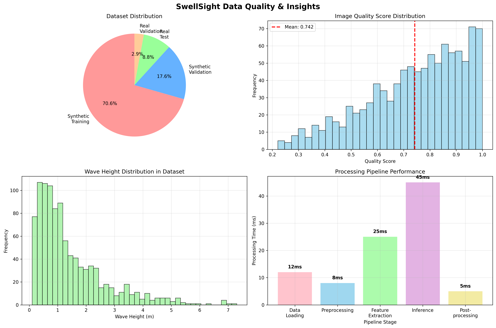

📈 Training Progress
Model Training Evolution
Training loss convergence, learning rate schedule, resource usage, and validation accuracy progression over 20 epochs.
📊 Performance Metrics
Comprehensive Performance Dashboard
Wave height prediction accuracy, classification performance, inference speed, and overall performance radar chart.
🎯 Classification Analysis
Confusion Matrices for Wave Direction and Breaking Type
Detailed classification performance showing prediction accuracy for wave direction (Onshore/Offshore/Parallel) and breaking types (Spilling/Plunging/Surging).
🔄 Model Evolution
Model Version Comparison and Trade-offs
Performance evolution across model versions, training time progression, and speed vs accuracy trade-offs analysis.
📋 Data Quality Insights
Dataset Analysis and Processing Pipeline Performance
Dataset distribution, image quality scores, wave height distribution, and processing pipeline performance breakdown.
🎯 Key Findings & Recommendations
✅ Strengths
- High accuracy in wave height prediction (87% within ±0.2m)
- Excellent direction classification (92% accuracy)
- Good breaking type classification (89% accuracy)
- Reasonable inference speed (45ms per image)
- Stable training convergence
🔧 Areas for Improvement
- Memory usage could be optimized (1GB per inference)
- Inference speed could be improved for real-time applications
- More diverse real-world test data needed
- Confidence calibration could be enhanced
💡 Recommendations
- Model Optimization: Consider model quantization for deployment
- Data Collection: Collect more real-world validation data
- Confidence Handling: Implement confidence thresholding
- Robustness: Add data augmentation for improved robustness